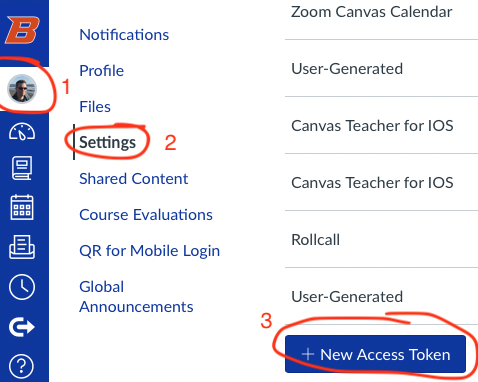

Using the Canvas API
The Canvas API
One important feature of Canvas is its API. In fact, the Canvas LMS as we use it is built on its API. Everything a user does in either Canvas’ web interface or the mobile apps goes through the API. This architecture allows every user to use the API to do anything they could do in the browser or mobile app plus more in a program.
This guide shows how to use Python and a library created by the University of Central Florida to create scripts that use the API.
Getting Started
Getting an Access Token
To get direct access to the API you need an access token that acts like a password. You can get the key from your user. As shown below, go to your users settings and click on New Access Token.

The Purpose field can have anything you want, but it is good to choose something that will help you remember why you created it. If you are doing this for learning, I suggest “Learning the Canvas API”.
Expiration: You should have your token expire in case you don’t use it again. If you are doing this for learning, have the token expire soon. You can create another at anytime. You can create more than one at a time if you want.
This access token is just as good as your username and password. Plus, it doesn’t require Duo! Treat it with extreme caution. Anyone with it can log into Canvas as you.
Copy the token to a safe place like a password manager or a temporary document on your desktop so that you can delete it later. As the dialog says, it will only show it one time. If you close the dialog before copying the token or copy it incorrectly. Delete that token (🗑) and create another.
Install Python
If you already have Python 3.9 or greater installed, and you can run python from the command line, you can skip this section.
These instructions are for Windows. If you are using MacOS or Linux, I suggest using your favorite package manager (like brew for MacOS) to install Python.
If not, do the following:
- Go to https://python.org, go to Downloads and choose to download the
Latest Python 3 Release. At the time of this writing, the latest is 3.10.8. It might be higher now. - Double click on the installer file to start the install
- Check the box that says
Add python.exe to PATH - Choose
Install Nowto complete the rest of the install
Check to see if it worked by
- Right-clicking on the start menu button and choosing
Windows PowerShell - At the prompt type
python --versionand press enter
It should show the version of python. This shows that you installed correctly. If it doesn’t work, uninstall python and reinstall it making sure you follow the instructions above.
Since we will be doing a lot on the command line I suggest installing and using the Windows Terminal. It does a lot of things better than the standard command line through Powershell or cmd.
Install Needed Packages
Now that Python is installed and we can run it from the command line, we are ready to install the Python packages we need to use the Canvas API.
- Open the command line (either Windows Terminal, if you installed it, or Windows PowerShell)
- Enter the following:
pip install canvasapi keyringStore your API token securely
We can use the keyring package we just installed to store your Canvas API token securely and where we can retrieve it later:
keyring set canvas tokenIt will then ask you for your “password”, which is the token you copied from canvas earlier. You will need to paste it here.
To check to see if it worked, issue the command with a “get” in place of the “set”:
keyring get canvas tokenHave a Text Editor Ready
You’ll need a text editor for writing your code Windows’ Notepad won’t work. If you don’t already have one installed, I suggest Notepad++.
Canvas API Hello World
Let’s do some interacting with the Canvas API. Open your editor and copy and paste the following code:
import keyring
from canvasapi import Canvas
############ Variables ################
course_id = '12017' #Change this to your course id
canvas_url = 'https://boisestatecanvas.instructure.com'
########################################
def main():
# Get your Canvas API Token from the keyring
token = keyring.get_password('canvas', 'token')
# Get a canvas object
canvas = Canvas(canvas_url, token)
# Get a canvas object
canvas = Canvas(canvas_url, token)
# Get the course you are interested in
course = canvas.get_course(course_id)
##### Here's where we do whatever we want with our course #####
# let's list all the assignments
# see https://canvasapi.readthedocs.io/en/stable/course-ref.html#canvasapi.course.Course.get_assignments
# and see https://canvasapi.readthedocs.io/en/stable/examples.html#assignments
assignments = course.get_assignments()
for assignment in assignments:
print(f'{assignment.name}, {assignment.due_at}')
if __name__ == '__main__':
main()Change the course_id variable to one of your courses. The number is in the Canvas URL. For example if the URL for your course is https://boisestatecanvas.instructure.com/courses/12017, then the course id is 12017.
You can now play with the API.
The API documentation for the python interface created by the University of Central Florida can be found here: https://canvasapi.readthedocs.io.
The Canvas REST API documentation, where you can find all of the variable names is here: https://canvas.instructure.com/doc/api/
How to use my scripts
I have already created a bunch of scripts (here’s the github repository). Unfortunately I didn’t make them as easy to use as the script above. There are two ways you can use them
- Download and use them as they are
- Copy and paste code from my scripts
Download and use my scripts
- Donwload the scripts as a zip file
- Unzip them into an appropriate folder
- Enter the canvas url into the keyring
keyring set canvas url https://boisestatecanvas.instructure.com- Inside the directory where you unzipped the scripts you can run them like this:
python list_my_courses.pyThis will give you command-line options you can use with the script
Copy and Paste
You can also look at the code for my scripts and copy and paste the code in place of everything below ##### Here's where we do whatever we want with our course #####. This takes some understanding of what my code is doing since you will have to replace variables I obtain from the command line with your own variable or value.
Other Canvas API Interfaces
You might wonder if there are Canvas API interfaces in your own favorite language. Here are a few:
- R: rcanvas
- Node.js: node-canvas-api
- Java: canvas-api
- Ruby: [lms_api])(https://github.com/atomicjolt/lms_api)
Finally, James Jones is very active in using the API and using javascript browser plugins to make canvas work easier. Here’s a list of some of his work. A repository of even more scripts he’s made can be found here: https://github.com/jamesjonesmath/canvancement